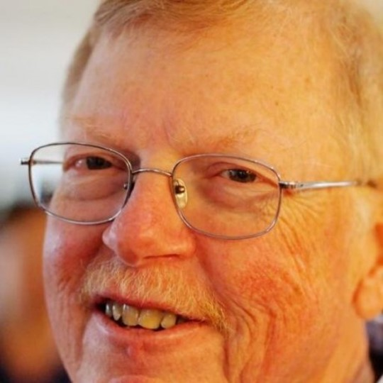

In Memoriam: Beman Dawes

Beman Dawes passed on December first, 2020 at the age of 81 years. He was survived by his wife Sonda.Dave Abrahams: Beman Dawes was my friend, inspiration, and collaborator. He was a living demonstration that collegial respect and kindness are fundamental to getting great results. His idea for Boost blossomed into a unique community, inventing the art of library design. RIP.
Emil Dotchevski: I talked with Beman many times. He was always kind, and through my experience with him I am honored to have had a chance to work with this brilliant member of our community. He should be celebrated as one of those little-known figures who nonetheless has had an enormous positive impact on the world through his work.
Stefanus Du Toit: Just learned about the passing of Beman Dawes. Beman was a truly positive and inspirational influence on the C++ community. A rare example of someone putting contribution to the greater good above all else. You'll be missed, Beman.
Howard Hinnant: He was a friend. He was a giant. He will be missed.
Jon Kalb: Beman Dawes' legacy in the C++ community is matched by few. As a leader in the process of defining the C++ standard, he recognized a need for high quality, non-proprietary libraries. He saw not only that these were few, but that there was no environment to create new ones. He created the Boost Libraries with the goal of making high quality, peer-reviewed, open source libraries available for every C++ programmer and as an environment to develop candidate libraries for standardization. He then helped launch BoostCon (now C++Now), as a way of nurturing the community that made Boost possible and appreciates high quality C++ libraries. He did all of this with such humor, humility, generosity, and grace that he will be much missed.
Robert Ramey: I do not think C++ would be where it is today without the extraordinary accomplishments of two particular people. Beman Dawes and David Abrahams. Before their efforts in the late nineties C++ was suffering from a lack of libraries which made it noncompetitive with alternatives being promoted at the time - most notably Java and C#. These alternatives were funded by they biggest of the big. The future must have looked bleak to C++ fans at the time. I was looking for an alternative to C++ when I came upon Boost with a number of portable and indispensable libraries. Boost was founded by these two gentleman (of complimentary personalities). That changed everything for me - and I'm sure I'm not the only one. And I suspect that it was responsible for changing the future of C++. To those who believe that one man can't make a big difference - I offer this counter example.
Herb Sutter: Beman was one of the most important and influential C++ experts in the world, and made his many contributions mostly behind the scenes, so that many C++ developers have likely never heard of him. I and everyone else who have ever benefited from any of the standardized STL, Boost, C++Now, std::filesystem, C++98/11/14/17, and more - so, really, most people who have ever used C++ - all owe Beman a debt of gratitude. We miss him greatly.
If you’ve thoughts about Beman that you’d like to share, please send them to memorial@boost.org.